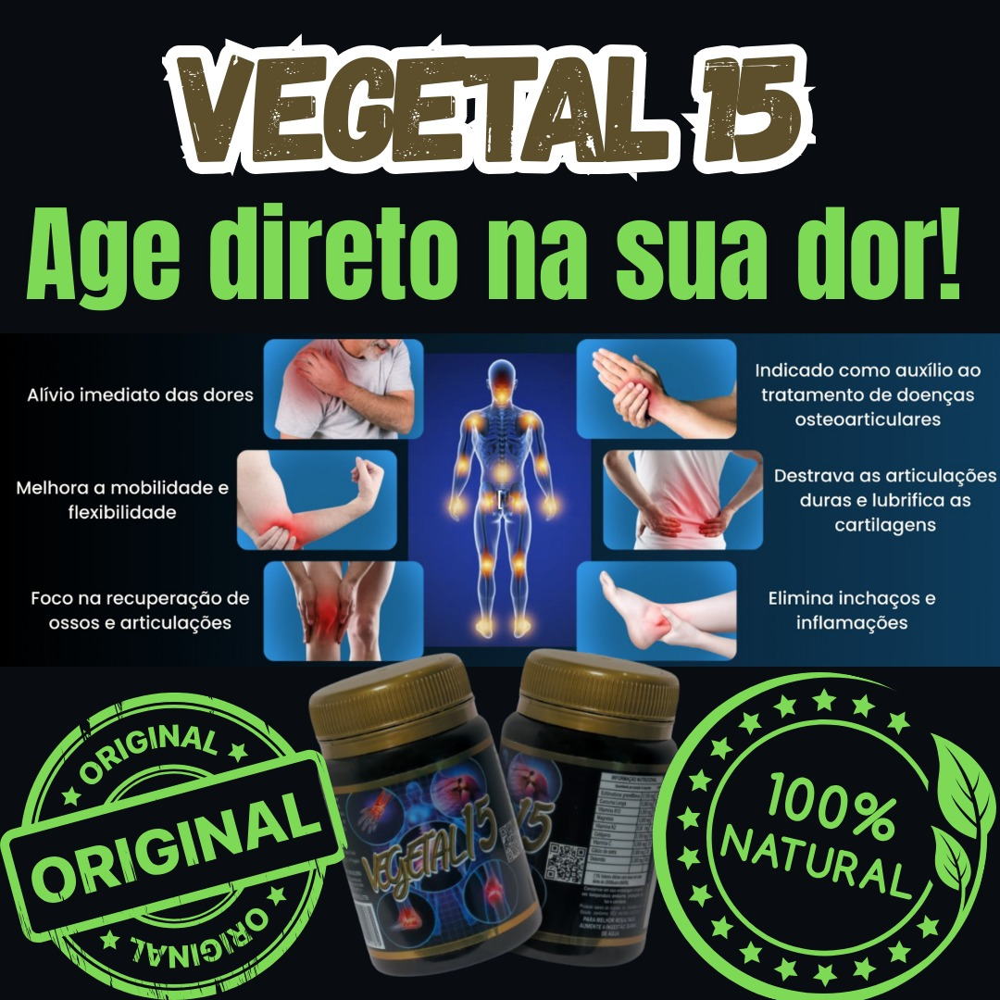

Trabalhamos com a distribuição do Vegetal 15 em diversas cidades de Alagoas, oferecendo um atendimento de qualidade e buscando ampliar nossa rede de distribuidores em toda a região.

Assista à apresentação do produto e conheça a embalagem, a composição, o modo de uso e como identificar o produto original.
Continue navegando para conhecer a composição do Vegetal 15, saber como utilizá-lo e descobrir como se tornar um distribuidor.
O Vegetal 15 é um suplemento alimentar desenvolvido com ingredientes cuidadosamente selecionados para complementar uma alimentação equilibrada e hábitos de vida saudáveis.
Sua composição reúne vitaminas, minerais e ingredientes naturais, seguindo as informações disponibilizadas pelo fabricante.
Para mais informações sobre o produto, composição e modo de uso, consulte sempre o rótulo da embalagem.
Confira os ingredientes informados pelo fabricante.
Extrato de cúrcuma presente na composição do produto.
Mineral presente na fórmula.
Vitaminas B12, C, D3 e K2.
Colágeno tipo II, cálcio de ostras, dolomita, zinco, canela-de-velho e unha-de-gato.
✔ Casos agudos: consumir 1 cápsula ao dia, preferencialmente após o café da manhã.
✔ Casos leves: consumir 1 cápsula a cada 48 horas.
✔ Não recomendado para gestantes, nutrizes e crianças até 12 anos.
✔ Armazenar na embalagem original, em local fresco e seco, protegido da luz e da umidade.
✔ Respeite a recomendação de consumo indicada pelo fabricante.
✔ Conserve o produto em local seco, fresco e protegido da luz.
✔ Mantenha fora do alcance de crianças.
Estamos preparando uma plataforma moderna para que você possa adquirir o Vegetal 15 com ainda mais praticidade, segurança e conforto.
Em breve você poderá realizar seus pedidos diretamente pelo nosso site com pagamento seguro, cálculo automático de frete e entrega para todo o Brasil.
Enquanto nossa loja está sendo preparada, conheça nossa rede de distribuidores e acompanhe as novidades.
Estamos ampliando nossa rede de distribuidores em Alagoas. Se você deseja representar o Vegetal 15 em sua cidade, entre em contato conosco.
Pão de Açúcar
Santana do Ipanema
Jacaré dos Homens
Olho D'Água
Arapiraca
Maceió
Estamos trabalhando para levar o Vegetal 15 a cada vez mais cidades de Alagoas.